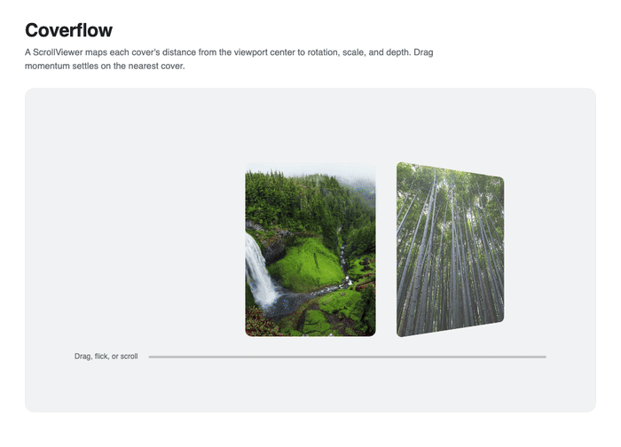
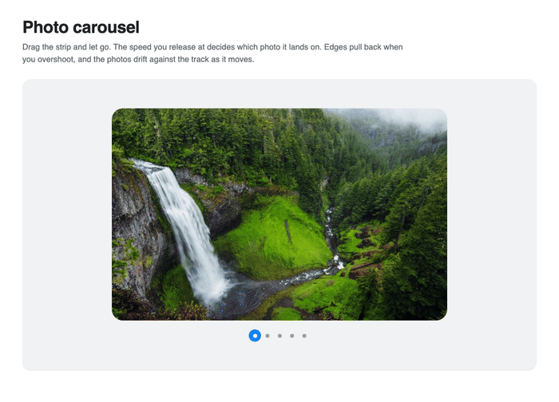

Motion values and scroll
MotionValue is an observable scalar for continuous relationships. It can be mapped, clamped, spring-smoothed, subscribed to, and bound to transform or double-property channels.
Compose a value
using var pointer = new MotionValue();
using var mapped = pointer.Map(0, 800, 0, 1);
using var normalized = mapped.Clamp();
using var eased = normalized.Smooth(Spring.Snappy);
using var binding = eased.BindScale(Card);
pointer.Set(pointerX);
Dispose derived values and bindings when their owner is detached. Derived values dispose their own source subscriptions, but they do not dispose the upstream value.
Create UI bindings on the UI thread. Later updates can originate on a worker thread and are coalesced before delivery; a newer UI-thread update supersedes older queued values. MotionValue itself is not thread-safe, so serialize updates and subscription changes. A failed binding write is reported through MotionConfig.Diagnostic and removes that binding, whether the update was synchronous or queued.
Disposing a source value also discards its pending UI binding updates. If a subscriber calls Set again on the same value, that newer update supersedes the remaining notifications from the older call, keeping mapped values and bindings consistent with the source.
Whole-scroller progress
Motion.ScrollProgress returns zero at the start and one at the end of a ScrollViewer.
using var progress = Motion.ScrollProgress(Scroller, ScrollAxis.Horizontal);
using var angle = progress.Map(0, 1, 16, -16);
using var smoothAngle = angle.Smooth(Spring.Smooth);
using var rotation = smoothAngle.BindRotateY(Card);
Element progress
The element overload measures between two ScrollAnchor values. The default range begins when the element's leading edge reaches the far edge of the viewport and ends when its trailing edge leaves the near edge.
using var progress = Motion.ScrollProgress(
Hero,
Scroller,
from: ScrollAnchor.Entering,
to: ScrollAnchor.Centered);
using var y = progress.Map(0, 1, 48, 0);
using var opacity = progress.Bind(Hero, Visual.OpacityProperty);
using var translation = y.BindY(Hero);
Available anchors include Entering, Leaving, Centered, and Pinned; custom anchors use fractional element and viewport points.

The same continuous-value pattern works with direct manipulation. This carousel maps the tracked position into image parallax and pagination, then projects release velocity to choose the nearest snap point.
